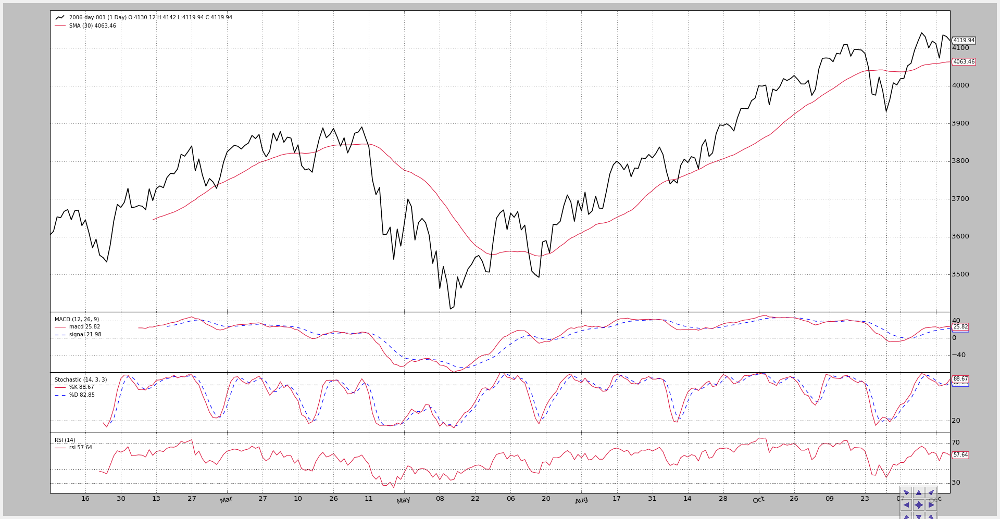
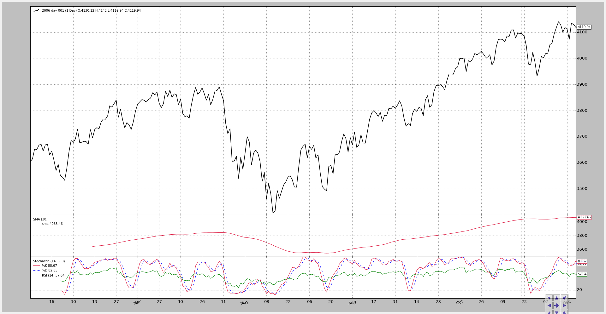
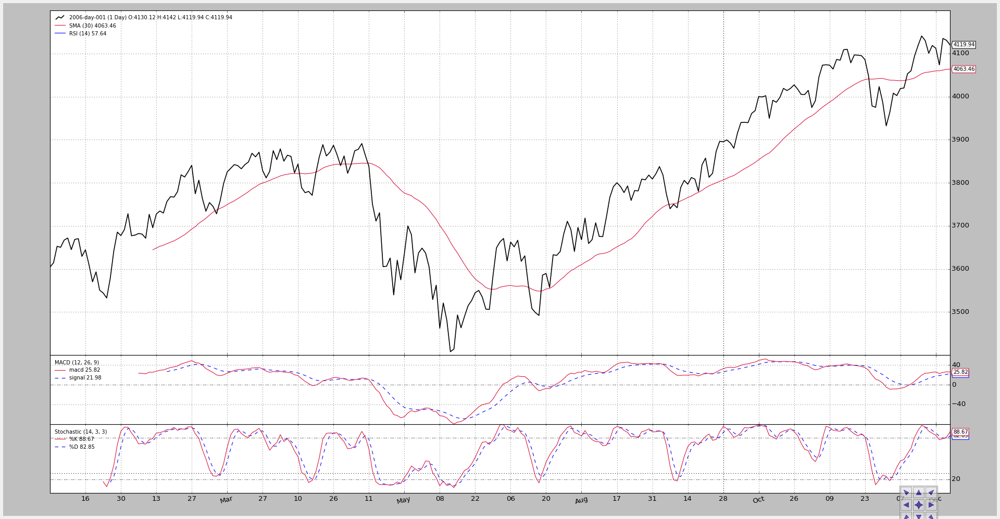
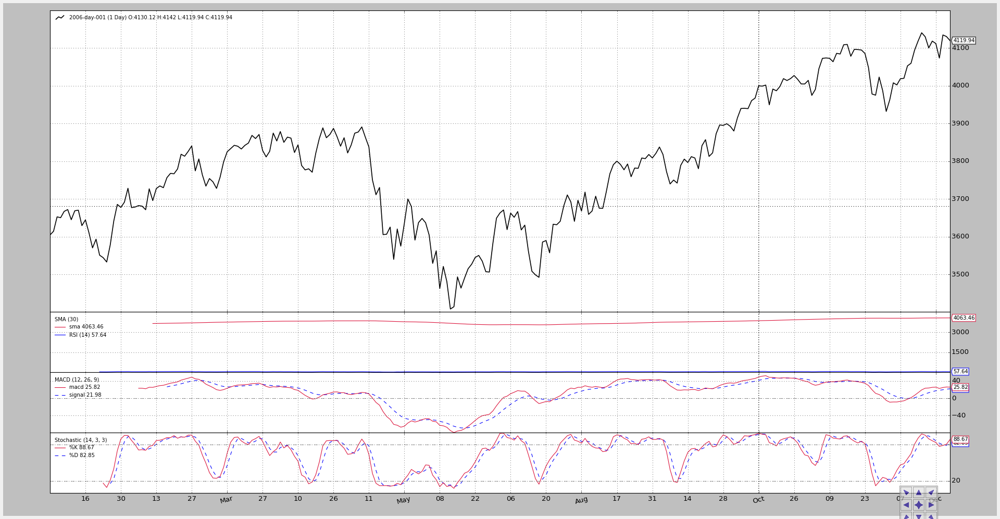

Plotting on the same axis¶
Following a comment on the blog a slight addition (luckily just a few lines of code) has been made to plotting.
- The abilitiy to plot any indicator on any other indicator
A potential use case:
Saving precious screen real estate by plotting some indicators together and having more room to appreciate the OHLC bars
Example: join Stochastic and RSI plots
Of course something has to be taken into account:
If the scaling of the indicators is too different, some of the indicators would not be visible.
Example: a MACD oscillating around 0.0 plus/minus 0.5 plotted over a Stochastic which moves across the 0-100 range.
The first implementation is in the development branch on commit ...14252c6
A sample script (see below for the full code) let us see the effects
Note
Because the sample strategy does nothing, the standards observers are removed unless activated via a command line switch.
First the script run with no switches.
- A Simple Moving Average is plotted over the data
- A MACD, Stochastic and RSI are plotted on own axis/subplots
Execution:
$ ./plot-same-axis.py
And the chart.
The second execution changes the panorama:
The Simple Moving Average is moved to a subplot
The MACD is hidden
The RSI is plotted over the Stochastic (the y-axis range is compatible: 0-100)
This is achieved by setting the
plotinfo.plotmastervalue of the indicator to the other indicator to be plotted onto.In this case and because the local variables in
__init__are namedstocfor Stochastic andrsifor RSI, it looks like:rsi.plotinfo.plotmaster = stoc
Execution:
$ ./plot-same-axis.py --smasubplot --nomacdplot --rsioverstoc
The chart.
And to check the incompatibility of scales, let’s try plotting the rsi over the SMA:
$ ./plot-same-axis.py --rsiovermacd
The chart.
The RSI label shows up with the data and the SMA, but the scale is in the 3400-4200 range and hence ... no traces of the RSI.
A further futile attempt is to place the SMA on a subplot and again plot the RSI on the SMA
$ ./plot-same-axis.py –rsiovermacd –smasubplot
The chart.
The label is clear but all that remains from the RSI is a faint blue line at the bottom of the SMA plot.
Updated on Sep 22, 2015
Added multi-line indicator plotted over another indicator
Going in the other direction, let’s plot a multi-line indicator on another indicator. Let’s plot the Stochastic on the RSI:
$ ./plot-same-axis.py --stocrsi
It works. The Stochastic label shows up and the 2 lines K% and D%
too. But the lines are not “named” because we have got the name of the
indicator.
In the code, the current setting would be:
stoc.plotinfo.plotmaster = rsi
To have the names of the Stochastic lines displayed instead of the name, we would additionally need:
stoc.plotinfo.plotlinelabels = True
This has been parametrized and a new execution shows it:
$ ./plot-same-axis.py --stocrsi --stocrsilabels
With the chart now showing the name of the Stochasti lines below the name of the RSI line.
The script usage:
$ ./plot-same-axis.py --help
usage: plot-same-axis.py [-h] [--data DATA] [--fromdate FROMDATE]
[--todate TODATE] [--stdstats] [--smasubplot]
[--nomacdplot]
[--rsioverstoc | --rsioversma | --stocrsi]
[--stocrsilabels] [--numfigs NUMFIGS]
Plotting Example
optional arguments:
-h, --help show this help message and exit
--data DATA, -d DATA data to add to the system
--fromdate FROMDATE, -f FROMDATE
Starting date in YYYY-MM-DD format
--todate TODATE, -t TODATE
Starting date in YYYY-MM-DD format
--stdstats, -st Show standard observers
--smasubplot, -ss Put SMA on own subplot/axis
--nomacdplot, -nm Hide the indicator from the plot
--rsioverstoc, -ros Plot the RSI indicator on the Stochastic axis
--rsioversma, -rom Plot the RSI indicator on the SMA axis
--stocrsi, -strsi Plot the Stochastic indicator on the RSI axis
--stocrsilabels Plot line names instead of indicator name
--numfigs NUMFIGS, -n NUMFIGS
Plot using numfigs figures
And the code.
from __future__ import (absolute_import, division, print_function,
unicode_literals)
import argparse
import datetime
# The above could be sent to an independent module
import backtrader as bt
import backtrader.feeds as btfeeds
import backtrader.indicators as btind
class PlotStrategy(bt.Strategy):
'''
The strategy does nothing but create indicators for plotting purposes
'''
params = dict(
smasubplot=False, # default for Moving averages
nomacdplot=False,
rsioverstoc=False,
rsioversma=False,
stocrsi=False,
stocrsilabels=False,
)
def __init__(self):
sma = btind.SMA(subplot=self.params.smasubplot)
macd = btind.MACD()
# In SMA we passed plot directly as kwarg, here the plotinfo.plot
# attribute is changed - same effect
macd.plotinfo.plot = not self.params.nomacdplot
# Let's put rsi on stochastic/sma or the other way round
stoc = btind.Stochastic()
rsi = btind.RSI()
if self.params.stocrsi:
stoc.plotinfo.plotmaster = rsi
stoc.plotinfo.plotlinelabels = self.p.stocrsilabels
elif self.params.rsioverstoc:
rsi.plotinfo.plotmaster = stoc
elif self.params.rsioversma:
rsi.plotinfo.plotmaster = sma
def runstrategy():
args = parse_args()
# Create a cerebro
cerebro = bt.Cerebro()
# Get the dates from the args
fromdate = datetime.datetime.strptime(args.fromdate, '%Y-%m-%d')
todate = datetime.datetime.strptime(args.todate, '%Y-%m-%d')
# Create the 1st data
data = btfeeds.BacktraderCSVData(
dataname=args.data,
fromdate=fromdate,
todate=todate)
# Add the 1st data to cerebro
cerebro.adddata(data)
# Add the strategy
cerebro.addstrategy(PlotStrategy,
smasubplot=args.smasubplot,
nomacdplot=args.nomacdplot,
rsioverstoc=args.rsioverstoc,
rsioversma=args.rsioversma,
stocrsi=args.stocrsi,
stocrsilabels=args.stocrsilabels)
# And run it
cerebro.run(stdstats=args.stdstats)
# Plot
cerebro.plot(numfigs=args.numfigs, volume=False)
def parse_args():
parser = argparse.ArgumentParser(description='Plotting Example')
parser.add_argument('--data', '-d',
default='../../datas/2006-day-001.txt',
help='data to add to the system')
parser.add_argument('--fromdate', '-f',
default='2006-01-01',
help='Starting date in YYYY-MM-DD format')
parser.add_argument('--todate', '-t',
default='2006-12-31',
help='Starting date in YYYY-MM-DD format')
parser.add_argument('--stdstats', '-st', action='store_true',
help='Show standard observers')
parser.add_argument('--smasubplot', '-ss', action='store_true',
help='Put SMA on own subplot/axis')
parser.add_argument('--nomacdplot', '-nm', action='store_true',
help='Hide the indicator from the plot')
group = parser.add_mutually_exclusive_group(required=False)
group.add_argument('--rsioverstoc', '-ros', action='store_true',
help='Plot the RSI indicator on the Stochastic axis')
group.add_argument('--rsioversma', '-rom', action='store_true',
help='Plot the RSI indicator on the SMA axis')
group.add_argument('--stocrsi', '-strsi', action='store_true',
help='Plot the Stochastic indicator on the RSI axis')
parser.add_argument('--stocrsilabels', action='store_true',
help='Plot line names instead of indicator name')
parser.add_argument('--numfigs', '-n', default=1,
help='Plot using numfigs figures')
return parser.parse_args()
if __name__ == '__main__':
runstrategy()


{kind=link}
{kind=link}
{kind=link}
{kind=link}
{kind=link}
{kind=link}